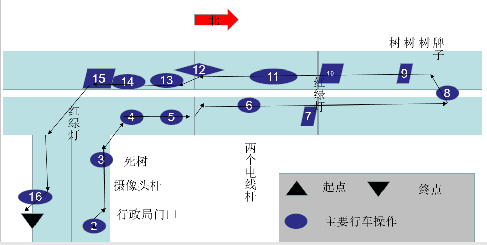
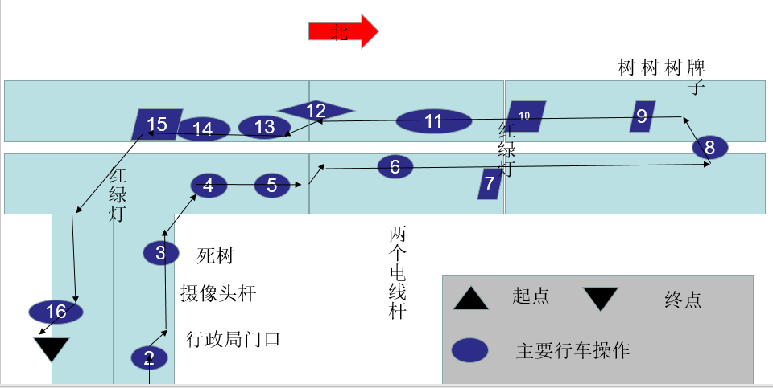

科目三（费县327国道车管所西）学习笔记
Table of Contents
近日我在学习开车。我已于2020年夏天经过累计四次考试艰难地通过了科目1和科目2，而由于错过了2020年冬、2021年夏两个继续学车的时间点，我只能于今年（即2021年冬与2022年春）抓紧学车了。我于2月10开始学车，每天下午约五点开始，多人一起，大概每天会获得1-2次的上手机会。本文详细记录了理想状态下完成科目三考试所需要的一些细节。
1. 路线图顺序

近日我在学习开车。我已于2020年夏天经过累计四次考试艰难地通过了科目1和科目2，而由于错过了2020年冬、2021年夏两个继续学车的时间点，我只能于今年（即2021年冬与2022年春）抓紧学车了。我于2月10开始学车，每天下午约五点开始，多人一起，大概每天会获得1-2次的上手机会。本文详细记录了理想状态下完成科目三考试所需要的一些细节。
